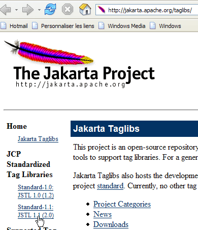
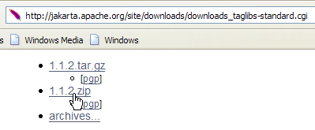
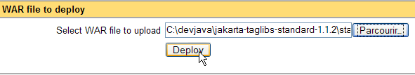

8. JSTL 标签库
8.0.1. 简介
考虑视图 [erreurs.jsp]，该视图显示错误列表：

编写此类页面有多种方法。本文仅关注错误显示部分。一种解决方案是使用Java代码，如以下示例所示：
<%@ page language="java" contentType="text/html; charset=ISO-8859-1"
pageEncoding="ISO-8859-1"%>
<!DOCTYPE HTML PUBLIC "-//W3C//DTD HTML 4.01 Transitional//EN">
<%@ page import="java.util.ArrayList" %>
<%
// 从模型中获取数据
ArrayList erreurs=(ArrayList)request.getAttribute("erreurs");
String lienRetourFormulaire=(String)request.getAttribute("lienRetourFormulaire");
%>
<html>
<head>
<title>Personne</title>
</head>
<body>
<h2>Les erreurs suivantes se sont produites</h2>
<ul>
<%
for(int i=0;i<erreurs.size();i++){
out.println("<li>" + (String) erreurs.get(i) + "</li>\n");
}//for
%>
</ul>
<br>
<form name="frmPersonne" method="post">
<input type="hidden" name="action" value="retourFormulaire">
</form>
<a href="javascript:document.frmPersonne.submit();">
<%= lienRetourFormulaire %>
</a>
</body>
</html>
页面 JSP 从请求中获取错误列表（第 8 行），并通过 Java 循环将其显示出来（第 19-23 行）。 该页面混合了 HTML 代码和 Java 代码，如果页面需要由通常不理解 Java 代码的网页设计师进行维护，这可能会造成问题。为避免这种混合，我们使用标签库，这将为 JSP 页面带来新的可能性。 借助 JSTL 标签库（Java 标准标签库），之前的视图变为如下所示：
<%@ page language="java" contentType="text/html; charset=ISO-8859-1"
pageEncoding="ISO-8859-1"%>
<!DOCTYPE HTML PUBLIC "-//W3C//DTD HTML 4.01 Transitional//EN">
<%@ taglib uri="/WEB-INF/c.tld" prefix="c" %>
<html>
<head>
<title>Personne</title>
</head>
<body>
<h2>Les erreurs suivantes se sont produites</h2>
<ul>
<c:forEach var="erreur" items="${erreurs}">
<li>${erreur}</li>
</c:forEach>
</ul>
<br>
<form name="frmPersonne" method="post">
<input type="hidden" name="action" value="retourFormulaire">
</form>
<a href="javascript:document.frmPersonne.submit();">
${lienRetourFormulaire}
</a>
</body>
</html>
标签（第 4 行）
表明使用了标签库，其定义位于文件 [/WEB-INF/c.tld] 中。这些标签将在页面代码中使用，并以字母 c 为前缀（prefix="c"）。前缀可自定义。此处 c 代表 [core]。 前缀的使用使得可以同时使用多个标签库，即使某些标签在不同库中名称相同。使用前缀可以消除这种歧义。新页面中，原先包含 Java 代码的两个位置现已移除：
- 从页面 [erreurs, lienRetourFormulaire] 获取模板（已删除部分）
- 错误列表的显示（第13-15行）
错误显示循环已被以下代码替换：
<c:forEach var="erreur" items="${erreurs}">
<li>${erreur}</li>
</c:forEach>
- 标签 <forEach> 用于界定一个循环
- ${variable} 语法用于输出变量的值
此处的 <forEach> 标签具有两个属性：
- items="${erreurs}" 指明了需要迭代的对象集合。此处，该集合即为 erreurs 对象。该对象位于何处？页面 JSP 将依次按以下顺序查找名为 "erreurs" 的属性：
- 对象 [request]，该对象表示由控制器传递的请求：request.getAttribute("erreurs")
- 对象 [session]，该对象代表客户端会话：session.getAttribute("errors")
- 对象 [application]，代表 Web 应用程序的上下文：application.getAttribute("错误")
由 items 属性指定的集合可以有多种形式：tableau、ArrayList、实现 List 接口的对象，等等
- var="错误" 用于为当前正在处理的集合中的元素命名。循环 <forEach> 将针对集合 items 中的每个元素依次执行。因此，在循环内部，当前正在处理的集合元素将在此处被命名为错误。
${erreur} 语法将变量 erreur 的值插入文本中。该变量不一定是字符串。JSTL 使用方法 erreur.toString() 来插入变量 erreur 的值。 除了 ${erreur} 这种写法，也可以使用 <c:out value="${erreur}"/> 标签。
回到我们的错误显示示例：
- 控制器将在发送到页面 JSP 的请求中包含一个包含错误消息的 ArrayList，即一个包含 String 对象的 ArrayList： request.setAttribute("错误",错误) 其中错误是 ArrayList；
- 由于 items="${errors}" 属性，JSP 页面将依次在请求、会话和应用程序中查找名为 errors 的属性。 它将在请求中找到该属性：request.getAttribute("erreurs") 将返回由控制器放置在请求中的 ArrayList；
- 因此，属性 var="erreur" 对应的变量 erreur 将指向 ArrayList 的当前元素，即一个 String 对象。 erreur.toString() 方法将把该 String 的值（此处为一条错误消息）插入到页面中的 HTML 数据流中。
由 <forEach> 标签处理的集合中的对象可能比简单的字符串更为复杂。以显示文章列表的 JSP 页面为例：
其中 [listarticles] 是一个包含 ArrayList 对象的集合，而 ArrayList 假设是一个包含 [Article] 字段的 JavaBean，每个字段都配有相应的 get 和 set 方法。 [listarticles] 对象是由控制器放入请求中的。 前面的 JSP 页面将从 forEach 标签的 items 属性中获取它。因此，当前的 article 对象（var="article"）指代一个 [Article] 类型的对象。让我们来看第 3 行中的标签：
${article.nom} 代表什么？实际上，其含义取决于 article 对象的性质。为了获取 article.nom 的值，JSP 页面将尝试以下两种方法：
- article.getNom() - 请注意拼写为 getNom，用于获取“名称”字段（JavaBean 标准）
- article.get("nom")
因此，对象 [article] 可以是一个带有“nom”字段的 Bean，也可以是一个带有“nom”键的字典。
处理对象的层次结构没有限制。因此，标签
可用于处理以下类型的 [individu] 对象：
class Individu{
private String nom;
private String prénom;
private Individu[] enfants;
// JavaBean 标准方法
public String getNom(){ return nom;}
public String getPrénom(){ return prénom;}
public Individu getEnfants(int i){ return enfants[i];}
}
为了获取 ${individu.enfants[1].nom} 的值，页面 JSP 将尝试多种方法，其中以下方法将成功：
individu.getEnfants(1).getNom()，其中 individu 表示一个 Individu 类型的对象。
8.0.2. 安装并探索 JSTL 库
上述说明对于我们关注的应用程序已足够，但 JSTL 标签库还提供了除已介绍之外的其他标签。要了解这些标签，可以安装库包中提供的教程。
我们将使用 [Jakarta Taglibs] 项目中的 JSTL 1.1 实现版本，该版本可通过以下网址获取：[http://jakarta.apache.org/taglibs/]（2006年5月）：
 |  |
 |  |
 |  |
下载的zip文件内容大致如下：

两个后缀为 .war 的文件是 Web 应用程序的归档文件：
- standard-doc：关于标签的文档 JSTL
- standard-examples：标签使用示例
我们将把后者部署到 Tomcat 中。通过 [Démarrer] 菜单中的相应选项启动 Tomcat，然后输入 URL [http://localhost:8080] 并点击链接 [Tomcat Manager]：

随后将显示一个身份验证页面。我们使用第 2.3.3 节中展示的凭据进行登录，即 manager / manager 或 admin / admin。

此时将显示一个页面，列出了当前在 Tomcat 中部署的应用程序：

我们可以利用页面底部的表单添加一个新应用程序：

我们使用按钮 [Parcourir] 指定要部署的 .war 文件。

虽然截图中未显示，但我们已从下载的JSTL发行包中选中了[standard-examples.war]文件。点击[Deploy]按钮即可将该应用程序保存并部署到Tomcat中。

[/standard-examples]应用程序已成功部署。现在我们启动它：

当读者寻找 JSTL 标签的使用示例时，建议点击本页面提供的各个链接。
应用程序 [standard-doc] 可以从文件 [standard-doc.war] 以相同方式部署。它提供了关于库 JSTL 的相当技术性的信息。对于初学者来说，它可能不太有吸引力。
8.0.3. 在 Web 应用程序中使用 JSTL
在 JSTL 1.2 库随附的示例中，JSP 页面的文件开头包含以下标签：
我们在第 8.1.1 节中已经遇到过这个标签，并对其进行了简要说明：
- [uri]：URI（统一资源标识符），其中包含该页面所用标签的定义。 当页面 JSP 被转换为 Java 代码以成为一个 Servlet 时，Web 服务器将使用该 URI。它还被 Web 页面开发工具用于验证页面中使用的标签语法是否正确，或提供输入辅助功能。 当用户开始输入标签时，熟悉该库的工具便能向用户提供该标签的所有可用属性。
- [prefix]：用于在页面中标识这些标签的前缀
若未连接到公共互联网，则无法使用 URI [http://java.sun.com/jsp/jstl/core]。在此情况下，可将标签定义文件保存在本地。 JSTL 1.2 发行版在 [tld]（标签语言定义）文件夹中提供了多个此类文件：

JSTL 实际上是一组标签库。 我们仅使用名为“核心”库的 [c.tld] 库。我们将上述 [c.tld] 文件放置在应用程序的 [WEB-INF] 文件夹中：

并在页面中添加以下标签 JSP 以声明使用“核心”库：
虽然使用标签库可以让我们避免在 JSP 页面中放入 Java 代码，但在将 JSP 页面转换为 Java Servlet 时，这些标签当然会被编译成 Java 代码。 它们使用了两个[jstl.jar, standard.jar]存档中定义的类，这些类位于[lib]发行版的JSTL文件夹中：

这两个归档文件位于我们应用程序的 [WEB-INF/lib] 文件夹中：

现在，我们已经具备了开发示例应用程序下一版本的基础。